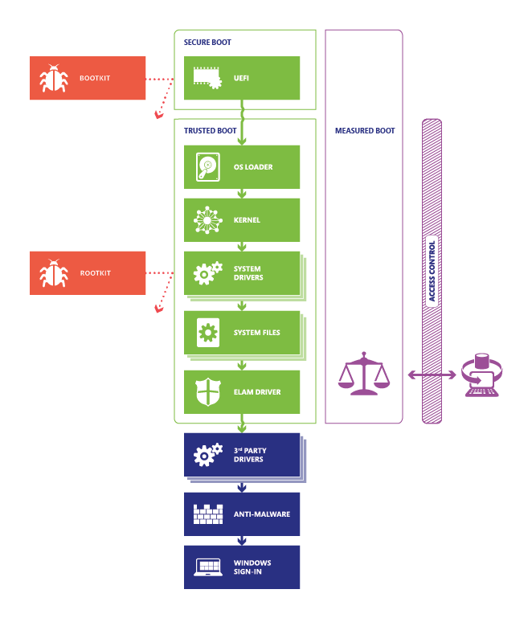
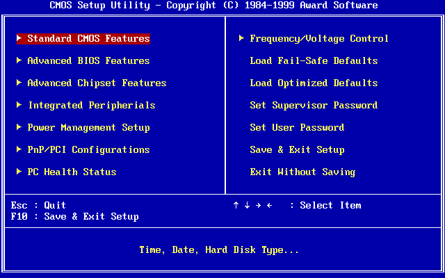

2. Seguridad en el arranque del sistema informático, configuración del arranque seguro (BIOS/UEFI)
1. Introducción
Antes de configurar un sistema informático debemos de comprender una serie de configuraciones de seguridad del mismo. Entre estas configuraciones, se ha de tener en cuenta la Seguridad de la BIOS.
2. Precauciones previas al Sistema Operativo
No podemos securizar el sistema sólo durante la ejecución del sistema operativo.
- ¿Cuáles son los riesgos de no proteger la BIOS?.
- ¿Cómo protegemos la BIOS y sus opciones?.
¿Cuáles son las fases de arranque?
|  | |
| Fuente: www.sesolibre.com | Fuente: www.microsoft.com |
Diferentes bootloaders
3. La BIOS
La BIOS (Basic Input Output System) [Wikipedia] es un software embebido en un chip de la placa base de un ordenador PC compatible, que localiza y reconoce todos los dispositivos necesarios para que funcione el sistema operativo en el ordenador. Permite por tanto que el sistema operativo pueda arrancar, localizando el dispositivo de arranque (disco duro, CD/DVD, USB, red, etcétera) y cargando las instrucciones necesarias para el proceso de inicio del ordenador.
Características BIOS:
- Ejecutar código para verificar la integridad de todos los componentes del firmware antes de que se ejecute y lance el sistema operativo.
- Probar los componentes clave hardware garantizando que toda la información cargue correctamente y no genere problemas sobre la información.
- Controla módulos adicionales como la tarjeta de vídeo o red.
- Selecciona el dispositivo de arranque que puede ser el disco duro, una unidad de CD o un dispositivo USB.
Las funciones principales son:
- Realizar el POST (Power-On Self-Test), es decir, realizar las pruebas necesarias para comprobar que todos los dispositivos se inician correctamente.
- Proporcionar al usuario de los periféricos de entrada y salida (teclado, ratón, pantalla).
- Arrancar el SO una vez completado el POST.

Figura 1. Imagen de una BIOS Award.
La BIOS proporciona una capa de abstracción para el hardware para que los programas y sistemas operativos interactúen con el teclado, el monitor y otros dispositivos de entrada/salida. De esta forma, los programas usan servicios de BIOS en lugar de acceder directamente al hardware. No obstante, actualmente los sistemas operativos modernos ignoran la capa de abstracción provista por el BIOS y acceden al hardware directamente.
En el arranque del ordenador, la BIOS también carga las rutinas POST (Power On Self Test) que testean la placa base, la memoria RAM, la tarjeta gráfica, el procesador, el teclado, etcétera, y comprueba que todo el hardware básico esté funcionando correctamente, es decir, realiza un chequeo del sistema.
En otras plataformas, como Apple, no se llamaba técnicamente BIOS. En estos ordenadores se llamabaOpenFirmware, hasta que en la actualidad, tanto los PC como los MAC han evolucionado usando lo que se conoce como UEFI, que es el reemplazo de las BIOS.
UEFI (Unified Extensible Firmware Interface) es el sucesor de BIOS. Dispone de las mismas funciones que BIOS, pero añade ciertas características más. El código de UEFI se ejecuta en 32 o 64 bits.
UEFI dispone de una interfaz más moderna, incluyendo animaciones y con la capacidad de utilizar el ratón, además de ser más rápido en el arranque que su antecesor. Además, puede conectarse a internet para actualizarse cosa que en BIOS era necesario hacerlo con un dispositivo externo.

Figura 2. Imagen de una UEFI en un ordenador ASUS.
Características UEFI:
- Características similares a BIOS.
- Se ejecuta en 32-/64-bit en modo protegido CPU.
- Posee un proceso que ayuda a prevenir de ataques del tipo bootkit y utilizar el modo Secure Boot
BIOS y UEFI son dos estándares que definen una interfaz de comunicación entre el sistema operativo y el firmware de un equipo. El firmware de BIOS/UEFI es el primer proceso que se ejecuta al encender un ordenador y configura, prueba e inicia los componentes hardware antes de pasar el control al gestor de arranque del sistema operativo.

BIOS vs UEFI:
- BIOS (Basic Input Output System) creado en 1975.
- UEFI (Unified Extensible Firmware Interface) escrito en C.
- BIOS usa Master Boot Record (MBR) mientras UEFI usa GUID partition table (GPT) para almacenar el sistema de particiones del disco duro.
- UEFI permite: un número ilimitado de particiones, soporta discos mayores de 2 TB, arranque con secure boot, mayor velocidad de arranque
4. ¿Cuáles son los riesgos de no proteger BIOS/UEFI?
Los riesgos son los siguientes:
- Los cambios podrían permitir la ejecución de software malicioso durante el proceso de arranque.
- Tomando el control de BIOS, se puede controlar el equipo objetivo y obtener acceso a los datos almacenados en él.
- El malware en el BIOS sigue siendo persistente y no se elimina incluso cuando se formatea o se borra todo el disco duro.
- Los ataques contra el BIOS suelen ser difíciles de detectar porque son invisibles para los antivirus.
- Rootkit: es un código utilizado poder obtener privilegios de administrador y poder realizar acciones como cambiar contraseñas, ejecutar programas, instalar aplicaciones.
- Bootkits: son rootkits específicamente programados para infectar el MBR. Contiene las instrucciones para cargar y ejecutar el sistema operativo. Cuando un comando es enviado para leer el MBR desde el SO, el bootkit responde enviando la versión original del MBR.
5. ¿Cómo protegemos el BIOS/UEFI y sus opciones?
¡Ojo con la pila de la placa base o webs como https://bios-pw.org!
Posibilidades:
- Existen tecnologías propietarias (ejemplo Sure Start de HP).
- Existe protección anti rootkit/bootkit mediante antivirus (no todos lo hacen).
¿Qué pasa con el orden de arranque?
- Si se tiene protegido el acceso a la BIOS/UEFI, no se puede modificar.
- Un ataque malintencionado podría utilizar la alteración del arranque para instalar software malicioso.
6. Protección con contraseña BIOS/UEFI
Una buena medida que podemos aplicar en las organizaciones (empresas, centros educativos, hospitales, etcétera), es evitar que cualquier usuario de la organización, con los conocimientos suficientes pueda modificar la configuración del firmware, como por ejemplo los dispositivos de arranque y permitir cargar un sistema operativo desde un CD/DVD o pendrive y acceder a datos del disco que de otra manera no podría.
En este excelente artículo se explica como podemos proteger la BIOS o UEFI con password.
Hay que indicar también que si se tiene acceso físico al ordenador y sobre todo, sí se puede abrir, es posible saltarse este mecanismo, pero al menos se lo estamos poniendo más difícil al posible atacante, que debe poder acceder al ordenador y abrirlo en la mayoría de los casos.
En este otro artículo, se explica como saltarse el sistema de protección de la BIOS/UEFI. Básicamente si podemos abrir el ordenador, se puede quitar la pila o resetear la BIOS con los jumpers de la placa acudiendo a la documentación de la misma. Existen también algunos programas que usándolos como administrador del equipo y con el sistema operativo encendido, pueden modificar o eliminar la contraseña de la BIOS. Uno de estos programas es CmosPwd.
También es cierto que en la mayoría de portátiles actuales, la contraseña de la BIOS está grabada en una memoria EEPROM que habría que reprogramar. Aunque es un proceso delicado y peligroso, pero puede hacerse adquiriendo un programador de EEPROMS.
Y por si fuera poco, encima hay fabricantes que incluyen una contraseña por defecto, a modo de puerta trasera, de forma que sabiéndola es posible acceder a la BIOS aunque esté protegida. O páginas como bios-pw.org donde indican la contraseña por defecto según el código de error de la BIOS cuando se escribe la contraseña incorrecta varias veces.
La protección con contraseñas tanto en el sistema BIOS como en el gestor de arranque, ayudan a que usuarios no autorizados no puedan acceder a los sistemas físicamente o arranquen el sistema desde dispositivos externos como USB u obtengan acceso como root.
7. Arranque seguro y SED
Algunos fabricantes, incluyen en el firmware de sus equipos (UEFI) una característica llamada arranque seguro o Secure Boot. El arranque seguro es un estándar de seguridad destinado a garantizar que los equipos arranquen usando solamente software que sea de confianza para el fabricante del equipo.
Cuando se arrancan los equipos, el firmware comprueba la firma digital de cada fragmento de software de arranque, entre ellos los controladores (drivers) y el sistema operativo. Si las firmas son confiables, el equipo arranca y el firmware transfiere el control al sistema operativo.
Secure boot es soportado por muchos sistemas operativos como Windows 8 y superiores, y muchas distribuciones GNU/Linux como Fedora (desde versión 18), OpenSUSE (desde la versión 12.3) y Ubuntu (desde la 12.04.2)
También hay fabricantes de discos duros que incluyen el cifrado del disco por hardware, lo que se conoce como Self-Encrypting Drive (SED) o Full Disk Encryption (FDE).
Interfaz de la BIOS
Interfaz UEFI
Para saber más
En los siguientes enlaces puedes encontrar más información sobre BIOS y UEFI:
Principales diferencias entre BIOS y UEFI: https://blog.redigit.es/principales-diferencias-entre-bios-y-uefi/
Si quieres saber mas sobre como afecta la UEFI a Windows: https://www.sysadmit.com/2017/04/windows-uefi-o-legacy-bios.html
Comprobando la instalación de Windows: https://hardzone.es/2018/10/28/comprobar-windows-instalado-bios-uefi-antigua/
Cambiar de BIOS (Legacy) a UEFI: https://hardzone.es/tutoriales/mantenimiento/cambiar-legacy-uefi-bios/
Windows: UEFI o Legacy (BIOS): https://www.sysadmit.com/2017/04/windows-uefi-o-legacy-bios.html
CCN-CERT_IA-08-15-BIOS
Obra publicada con Licencia Creative Commons Reconocimiento No comercial Compartir igual 4.0